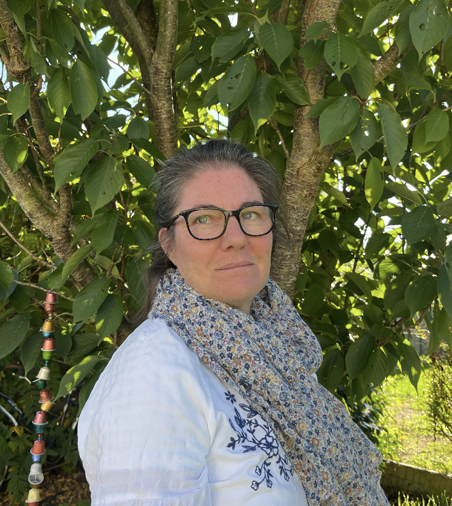

Psychopédagogue à Goven
Retrouver la confiance.
Et le plaisir d’apprendre.
J’accompagne votre enfant pour qu’il découvre ses ressources et avance à sa façon.
Découvrir mon approcheAu cabinet à Goven · À domicile

Mon approche
Comprendre sa façon d’apprendre.
Faire grandir sa confiance.
Chaque enfant a sa manière de comprendre, de ressentir et d’avancer.
Je prends le temps de découvrir avec lui ce qui l’aide, ce qui le freine et les méthodes qui lui correspondent.
Découvrir la psychopédagogieÀ chaque âge, son chemin.
J’accompagne les enfants, les collégiens et les lycéens dans leur façon d’apprendre. Je pars de leurs besoins, de leurs ressources et de leur rythme, en lien avec les parents.
Les accompagnements et les tarifsFaisons connaissance.
Je vous propose un premier échange autour de vos besoins.
Maquette de design · Textes, coordonnées et tarifs à valider avant publication